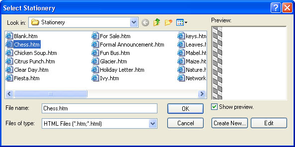
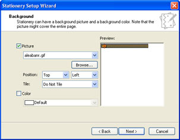
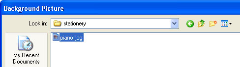
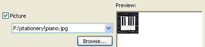
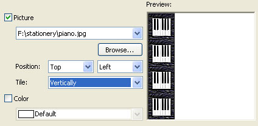
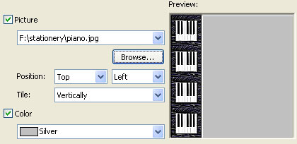
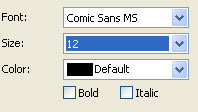
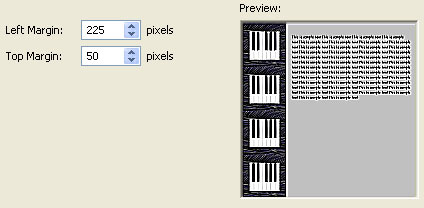
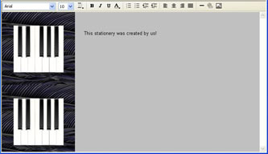

Free
computer Tutorials
|
Free
computer Tutorials
|
|
 home home |
|||||
Create your own Stationery in Outlook Express
You can create your own stationery in Outlook Express, and add any images you like. Your new stationery will then be available any time you need it.
From a new email, click Format > Apply Stationery > More Stationery from the menu bar. This will bring up the Select Stationery dialogue box: 
 From this screen, you can select an image to use as your stationery, and specify where it should go on the page. Click the Browse button to select the image you want to use for your stationery. (You don't want to select images that are very large, because the size of the file would be too big. Aim for an image that's no more than 10 to 15 kilobytes in size.) In the images below, we've clicked the Browse button to navigate to an image we want to use:   In the two images above, we've chosen a picture called piano.jpg. The location of this image is then placed in the textbox (F:\stationery\piano.jpg). We want this image to appear on the left of our email, and for it to be tiled vertically. This will get us the same image repeated down the page. From the Position drop down lists we've chosen Top, Left and Tile Vertically. A preview of what this will look like appears on the right:  If you would like a different colour for the main body of the email, tick the Color checkbox. You can then select your colour from the list:  There's not too many to choose from, but we've gone for Silver. When you're happy with the Preview, click Next. The next screen allows you to select the Font you want to use for your email text. This, unfortunately, does not work too well. You can select the font you want to use, along with the colour and size. But when you try to write your email with your new stationery, Outlook Express will often revert to the default of an Arial font in size 10! All the same, we've chosen a Comic Sans MS font in size 12. We've kept the colour on black, and don't want Bold or Italic.  The next screen is an important one. It allows you to set how far from the left the text should start. The size is in pixels. The image we're trying to use is 200 pixels high by 200 pixels wide, so we need the left margin to start at a number higher than 200. Otherwise our email text will end up over the image. You can also specify how far down the page you want your text to start. In the image below, our left margin is 225 pixels and our Top margin is 50 pixels:  Click next, and give your new stationery a name (it's better to use just one word). When you click Next, you're done. So click the Finish button and you'll be returned to the Select Stationery screen. The name of your new Stationery will already be in the File Name box, so just click OK to see your new stationery added to you email. Type some text to see what it looks like. Has Outlook Express ignored your Font choices and gone back to Arial 10 points? In the image below, it has! The only solution is to type the email text in the default font and then format it later :( 
There's plenty of stationery on the Internet, if you want to see what others have created. Try a Google search with "Outlook Express Stationery". (Include the quote marks.) Your emails need never be plain again!
<--Back One Page Move
on to the Next part --> <--Back to the Beginner's Computing Contents Page View all our Home Study Computer Courses
|
|||||
|